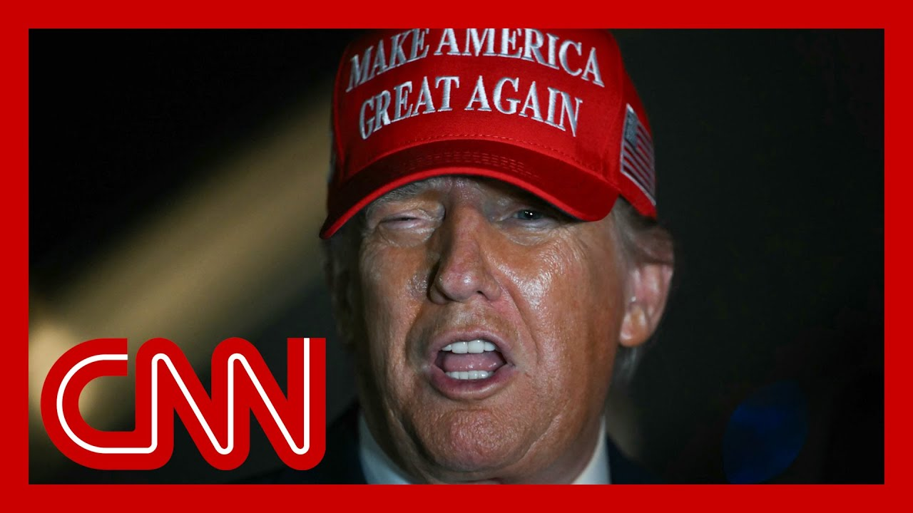

【CNN News 20250705 特朗普称与普京通话后“非常失望”】
Summary: Ukraine's Air Force says Russia launched a record number of attack drones and missiles overnight, with Kyiv's mayor reporting at least 23 wounded; the massive attack followed Ukraine's announcement of a U.S. deal to produce hundreds of thousands of drones, as the Trump administration paused some weapons shipments.
摘要： 乌克兰空军称俄罗斯夜间向该国发射了创纪录数量的攻击无人机和导弹，基辅市长表示至少23人受伤，此次大规模袭击发生前数小时，乌克兰总统宣布一家美国公司将为其生产数十万架无人机，与此同时特朗普政府暂停了部分对乌武器运输。

⏱️ Estimated Reading Time: 14 min
📚 四级生词 📚 六级生词 📚 雅思生词 📚 托福生词 📚 专八生词 📚 SAT生词 📚 考研生词 📚 GRE生词 📚 高考生词 📚 其它生词生词
Ukraine's Air Force says Russia launched a record number of attack drones and missiles at the country overnight.
乌克兰空军表示，俄罗斯夜间向该国发射了创纪录数量的攻击无人机和导弹。
Thousands of residents spent the night in shelters, including in subway stations or underground parking lots, as explosions and the sound of drones echoed through the city during the attack, which lasted 13 hours.
数千名居民在避难所过夜，包括地铁站和地下停车场，袭击持续13小时期间爆炸和无人机声响彻城市。
Ukraine's military says Russia launched nearly 540 drones plus 11 ballistic and cruise missiles in the early hours of Friday.
乌克兰军方称俄罗斯在周五凌晨发射了近540架无人机和11枚弹道导弹及巡航导弹。
The mayor of Kyiv says at least 23 people were wounded.
基辅市长表示至少23人受伤。
The massive attack came just hours after Ukraine's president said a U.S. company will produce hundreds of thousands of drones this year for the country.
此次大规模袭击发生前数小时，乌克兰总统宣布一家美国公司将为其今年生产数十万架无人机。
This comes as the Trump administration pauses some weapons shipments to Ukraine.
与此同时特朗普政府暂停了部分对乌武器运输。
And Trump earlier gave an update on his efforts to get a ceasefire in Ukraine.
特朗普早些时候更新了其促成乌克兰停火的努力进展。
Those comments came after President Trump said on Thursday that he did not make any progress toward a ceasefire during his lengthy talk with Russian President Vladimir Putin.
此前特朗普总统周四表示，在与俄罗斯总统普京长时间通话中未就停火取得进展。
According to Russian state media, President Trump talked about ending the war in Ukraine as early as possible.
据俄罗斯官方媒体报道，特朗普总统谈及尽早结束乌克兰战争。
The Kremlin quoted President Putin, saying he would continue to try to solve what he called the, quote, root causes of Russia's so-called special military operation in Ukraine.
克里姆林宫援引普京总统表态，称将继续解决其所谓的乌克兰"特别军事行动"根源问题。
More now on President Trump's call with Vladimir Putin from CNN's Kristen Holmes at the White House.
CNN白宫记者克里斯汀·霍姆斯带来特朗普与普京通话的更多细节。
The White House did not provide any sort of readout of this call.
白宫未提供此次通话的任何简报。
However, President Trump stopping to talk to reporters said this.
但特朗普总统停下脚步对记者表示。
We had a call.
我们进行了通话。
It was a pretty long call.
通话相当漫长。
We talked about a lot of things, including Iran.
我们讨论了包括伊朗在内的诸多议题。
And we also talked about, as you know, the war with Ukraine.
如你所知，我们也谈及乌克兰战争。
And I'm not happy about that.
我对此并不满意。
Now, impressed by a reporter if he had made any progress in terms of a Ukraine ceasefire, President Trump said they didn't make any progress at all.
当被记者追问是否在乌克兰停火方面取得进展时，特朗普总统表示"毫无进展"。
But again, no real readout from the White House or the president about what happened on this call.
但白宫或总统本人仍未透露通话具体内容。
However, the Kremlin said that President Trump did bring up ending any kind of military action in Ukraine on Putin's part as soon as possible, which is something that Putin pushed back on, essentially saying that they would not be doing that, saying they were going to be sticking to their goals that addressed the root cause of the issues.
不过克里姆林宫称特朗普确实提出要普京尽快停止在乌军事行动，但普京予以回绝，强调将坚持解决"问题根源"的目标。
The Kremlin clarifying that that meant that nothing was going to change in terms of their posture when it came to Ukraine.
克里姆林宫明确表示这意味着其对乌立场不会改变。
One thing that didn't come up on the call, we are told, is the fact that United States had paused some shipments of munitions to Ukraine.
据悉通话中未提及美国暂停部分对乌军火运输一事。
That has been part of a notable shift that we have seen from the White House, from the Pentagon.
这是我们从白宫和五角大楼观察到的显著政策转变。
However, White House officials said that this was part of a review that looked at all of military spending, looked at all of the aid that the United States provides to other foreign nations as part of where they are going for President Trump's agenda.
但白宫官员称这是全面审查军事开支及对外援助的一部分，以配合特朗普总统的议程。
But very interesting to see here this call much shorter than what we saw the first time around and also President Trump, he is seemingly growing frustrated with his inability to solve the crisis in Ukraine.
值得注意的是此次通话较首次大幅缩短，且特朗普总统似乎对无力解决乌克兰危机愈发沮丧。
He said so as much that he had made again no progress in today's call.
他明确表示在本次通话中再次未取得进展。
Kristen Holmes, CNN, The White House.
CNN白宫记者克里斯汀·霍姆斯报道。
CNN's Matthew Chance has more now on what information we can glean from the call between President Trump and Putin.
CNN马修·钱斯带来对特朗普与普京通话的进一步分析。
It's the sixth call that we know about that the two leaders have had.
这是两位领导人已知的第六次通话。
Nothing really substantial seems to have come out of it, except you get a sort of growing sense of the sort of quite courteous relationship between these two political leaders, President Trump of the United States and President Putin of Russia.
除感受到美俄领导人之间日益礼貌的关系外，通话似乎未取得实质成果。
But according to the readout from the Kremlin, they said that the issue of ending the military campaign in Ukraine, Russia's military campaign there, was raised pretty quickly in the conversation.
但克里姆林宫简报称，通话中很快提及结束俄罗斯在乌军事行动的话题。
But that Vladimir Putin essentially pushed back on it and said, look, we're not going to do that until we've achieved our objectives, our goals, the root causes as he calls them.
但普京基本予以拒绝，表示除非实现其所谓"解决根源问题"的目标，否则不会停止行动。
That's usually code in Russia for them ending any form of NATO expansion in the country and also taking over the areas that they've already formally annexed, although not yet completely control inside Ukraine.
这通常是俄罗斯要求停止北约东扩并完全控制其已"正式吞并"乌领土的代名词。
And so, look, I mean, essentially, there was pushback from the Kremlin to the White House to President Trump about this idea of them bringing to an end in short order their conflict in Ukraine.
由此可见克里姆林宫对白宫和特朗普提出的尽快结束乌克兰冲突构想进行了回绝。
And from the White House side, there doesn't seem to have been much in terms of consequences for that kind of defiance, that Kremlin defiance.
而白宫方面似乎未对这种克里姆林宫的抗拒行为提出实质反制措施。
Trump has not, for instance, increased sanctions or he doesn't seem to have threatened Vladimir Putin with any consequences for his refusal to stage a ceasefire, for instance.
例如特朗普既未追加制裁，也未就普京拒绝停火提出任何后果警告。
Joining me now is Charles Cuppcher and a senior fellow at the Council on Foreign Relations.
现在连线美国外交关系委员会高级研究员查尔斯·库普彻。
He also served on the National Security Council for the Clinton White House.
他曾任职于克林顿政府的国家安全委员会。
Thank you for being with us, sir.
感谢您的参与。
Good to be with you.
很高兴参加节目。
So after this hour-long conversation between President Trump and Putin, Yuriy Ushakov, a senior Kremlin aide, revealed some details of what Vladimir Putin actually had said.
在特朗普与普京长达一小时的会谈后，克里姆林宫高级助手尤里·乌沙科夫披露了普京的具体表态。
Listen to this.
请听这段内容。
Our president also said that Russia will seek to reach the goals it has set, that is the elimination of the well-known root causes that led to the current state of affairs, to the current acute confrontation.
我国总统明确表示俄罗斯将寻求实现既定目标，即消除导致当前局势和激烈对抗的已知根源。
And Russia will not back down from these goals.
俄罗斯不会在这些目标上退让。
So in other words, what Moscow is saying, it isn't willing to concede much of anything, which is directly at odds with the United States and comes without any sanctions or repercussions, it seems.
换言之，莫斯科表明其不愿做出任何实质性让步，这与美国立场直接冲突，且似乎未面临任何制裁或后果。
Well, I think the good news is that Trump is talking to Putin.
我认为好消息是特朗普正与普京对话。
And if the war in Ukraine is going to end, it will take U.S.-Russia dialogue and diplomacy.
若要结束乌克兰战争，美俄对话与外交手段不可或缺。
The bad news is this is the sixth call between Putin and Trump that we know about, and no progress has been made in bringing this war to an end.
坏消息是这已是两位领导人第六次已知通话，但战争结束仍无进展。
In fact, the Russians have increased the scope of their bombing campaigns against Ukraine.
实际上俄罗斯还扩大了对乌轰炸范围。
And as you just heard from what Ushakov said, the Russians have shown no sign that they're negotiating good faith, no sign that they are ready to compromise and back away from their effort to get at what they call the root causes of the war.
正如乌沙科夫所言，俄方未展现任何诚意谈判迹象，也不愿妥协或放弃其所谓"解决战争根源"的努力。
That means rolling back the post-Cold War settlement, pulling NATO forces back from the Eastern Front, getting Ukraine to recognize Eastern part of the country as part of Russia.
这意味着推翻冷战后的安排，迫使北约从东翼撤军，让乌克兰承认其东部地区属于俄罗斯。
All that is a non-starter.
这些条件根本不可能实现。
And so we really haven't made any progress in the negotiations.
因此谈判实际未取得任何进展。
And this Putin-Trump conversation came as the U.S. pauses weapons shipments to the Ukrainians.
此次普特通话正值美国暂停对乌武器运输之际。
And here's President Trump explaining why.
以下是特朗普总统的解释。
We're giving weapons, but we've given so many weapons, but we are giving weapons, and we're working with them and trying to help them, but we haven't.
我们提供武器，但已提供太多武器，我们仍在提供武器并努力协助他们，但...
You know, Biden emptied out our whole country giving them weapons, and we have to make sure that we have enough for ourselves.
拜登几乎掏空我国库存援乌武器，我们必须确保自身储备充足。
That is not an accurate statement.
这一说法并不准确。
Any drawdown of weapons from existing stockpiles have been restocked with new, more modern replacements.
所有从现有库存调拨的武器都已用更新式装备补充。
So is this weapons pause by the U.S. more of a negotiating tactic here?
那么美国此次暂停军援是否更多是谈判策略？
Well, if it is a negotiating tactic, it's the wrong one.
若真是谈判策略，那也是错误的策略。
And that's because in many respects it undercuts Trump's effort to put coercive pressure on Putin.
因为这多方面削弱了特朗普对普京施加压力的努力。
Putin is continuing to attack Ukraine and pursue expansive war aims because he thinks he can continue to take ground from Ukraine.
普京之所以持续攻击乌克兰并追求扩张性战争目标，正是因为他认为能继续夺取乌领土。
And the fact is, he can.
而事实也的确如此。
And so what Trump should be doing is saying to Putin, I'm going to increase economic sanctions.
因此特朗普本应告诉普京将加强经济制裁。
I'm going to increase the flow of weapons to Ukraine.
增加对乌武器输送。
We're going to stop you from your aggression against this country.
阻止你对这个国家的侵略。
That's not what he's saying.
但他并未如此表态。
And what happened yesterday, the pause in the flow of weapons to Ukraine is directly at odds with Trump's efforts to negotiate an end to the war.
昨日发生的对乌武器暂停运输事件，与特朗普谈判结束战争的努力直接矛盾。
And when it comes to sanctions, New York Times is reporting the U.S. has imposed no new sanctions on Russia this year, unlike the previous administration, which imposed thousands of so-called maintenance sanctions targeting new schemes without continuous maintenance of restrictions Russian workarounds actually can take hold.
在制裁方面，《纽约时报》报道美国今年未对俄实施新制裁，而上届政府实施了数千项所谓"维持性制裁"，若不持续更新限制措施，俄罗斯总能找到规避途径。
So in other words, over time, these sanctions become less effective, which seems to be the case here with Russia, which is why you need the new ones.
换言之，随着时间的推移，这些制裁效果会递减——俄罗斯正是如此——因此需要新制裁。
So there does seem to be a picture emerging here that despite what the president may be saying publicly about not being happy with Russia, privately, he seems unwilling to apply any real pressure on Russia while working to weaken Ukraine's position.
由此浮现的图景是：尽管总统公开表达对俄不满，但私下似乎不愿对俄施加实质压力，同时还在削弱乌克兰的立场。
You got it right.
你说得对。
I mean, basically he has not yet said he's going to tighten sanctions.
他基本上尚未表态将加强制裁。
And we don't know the answer to the $6 million question, which is when the $61 billion that Biden got out of Congress runs out and it's going to run out this summer, is Trump going to go back to Congress and say, we need more money for Ukraine?
关键问题是：当拜登从国会争取的610亿美元援乌资金在今夏耗尽后，特朗普会否要求国会追加资金？
If he doesn't, if he turns off the spicket, if there are no more U.S. weapons flowing to Ukraine, Ukraine is going to be in a very vulnerable position.
若他关闭资金阀门，停止对乌军援，乌克兰将陷入极其危险的境地。
And it makes it harder for Trump to get Putin to stop.
这也将加大特朗普让普京停火的难度。
And so I don't think Trump gets it yet.
因此我认为特朗普尚未理解这点。
I think he came into office thinking that he could pick up the phone, call his bro, Mr. Putin, and tell Vladimir to stop.
他上任时可能认为只需给"兄弟"普京打个电话就能令其停手。
Well, it's not working.
但事实并非如此。
Now Trump needs to come around and understand that Putin will stop when he is stopped.
现在特朗普需要明白：只有被阻止，普京才会停手。
And that means giving Ukraine what it needs to defend itself.
这意味着向乌克兰提供其自卫所需支持。